A pix2pix model trained on my own photos. Give it a piece of ground and it decides which of my shoes belongs there.
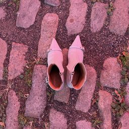
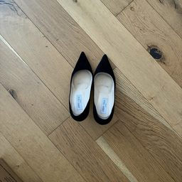
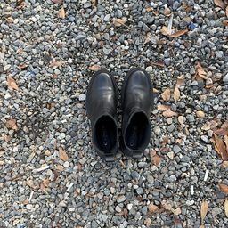
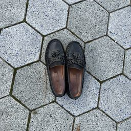
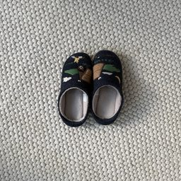
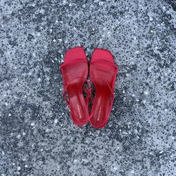
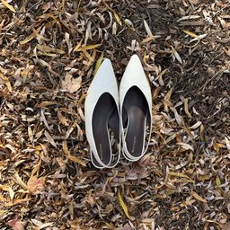
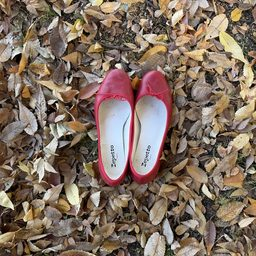
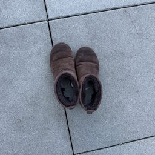
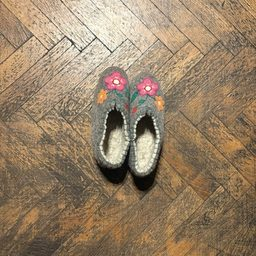
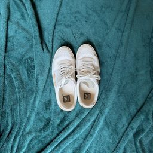
Shoes are the hardest part of getting dressed. Everything else can be layered, swapped or hidden under a coat, but you only get one pair, and it has to work with wherever you are going to walk.
So I trained a model to make that decision the way I do: by looking down.
Each pair was photographed from straight above, on the surface it belongs to. The rule the model learns is the pairing, not the place.
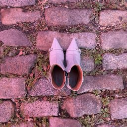
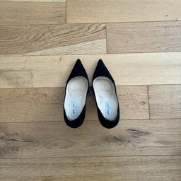
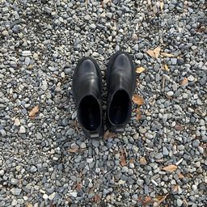
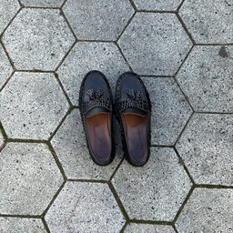
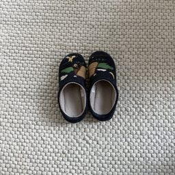
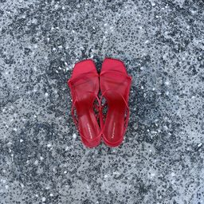
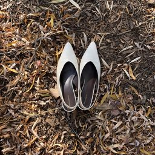
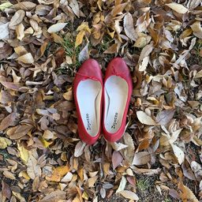
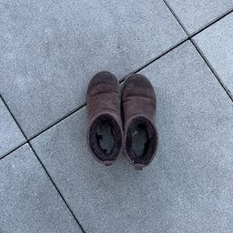
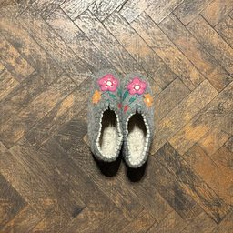
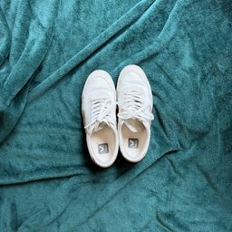
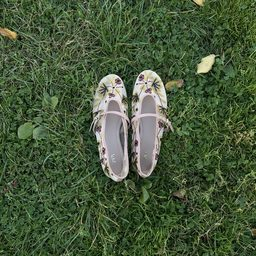
1,457 pairs, including mirrored copies. View the dataset
The first training run took about 14 hours on my laptop and reached 103 epochs. By epoch 10 a recognisable shoe shape had already emerged.
A table of printed grounds and an iPad. Visitors slide a ground under the camera, take a photo, and the model fills in the shoe.
Try itNothing has been posted on this device yet.